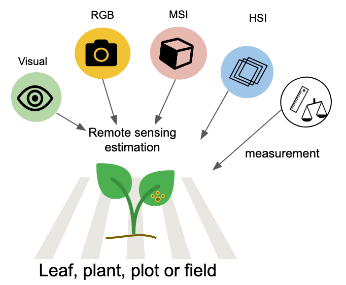
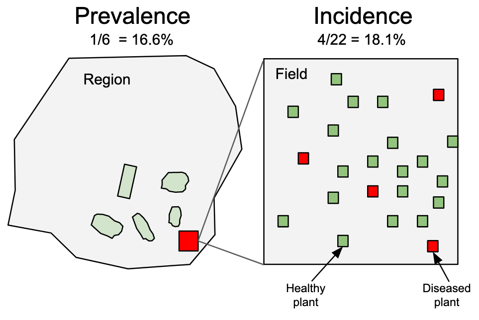
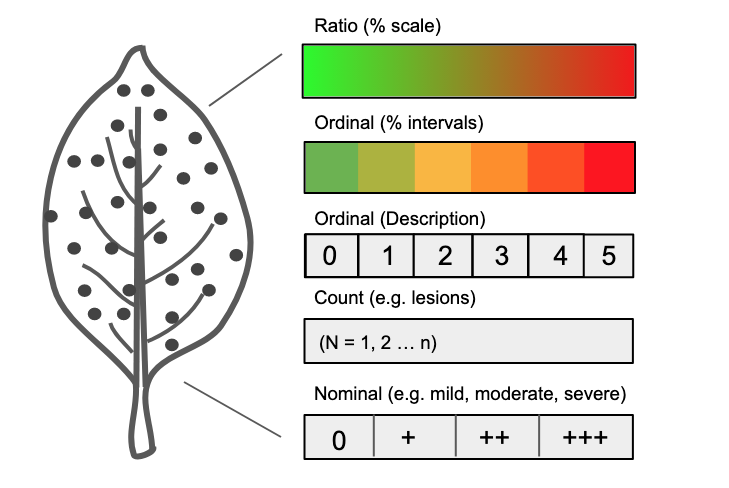
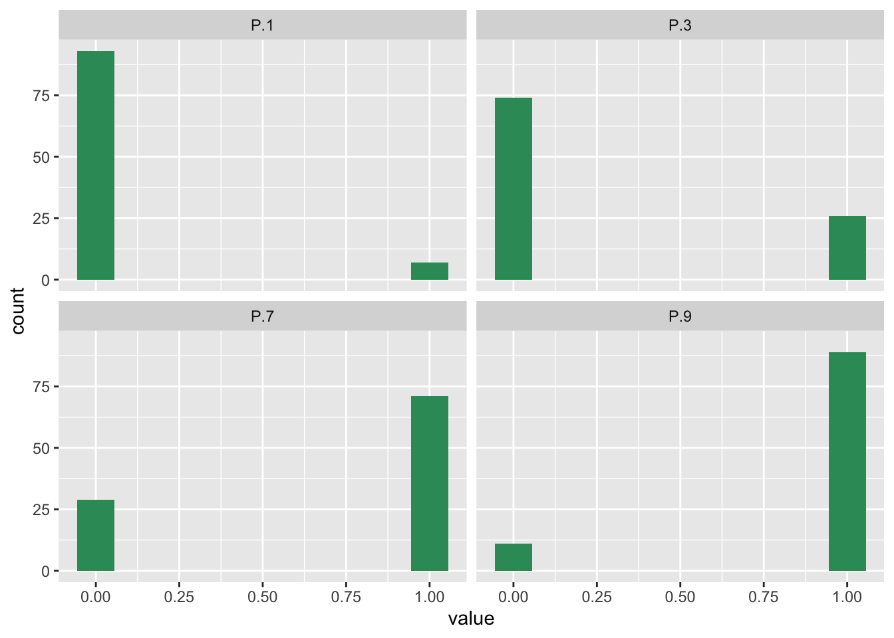
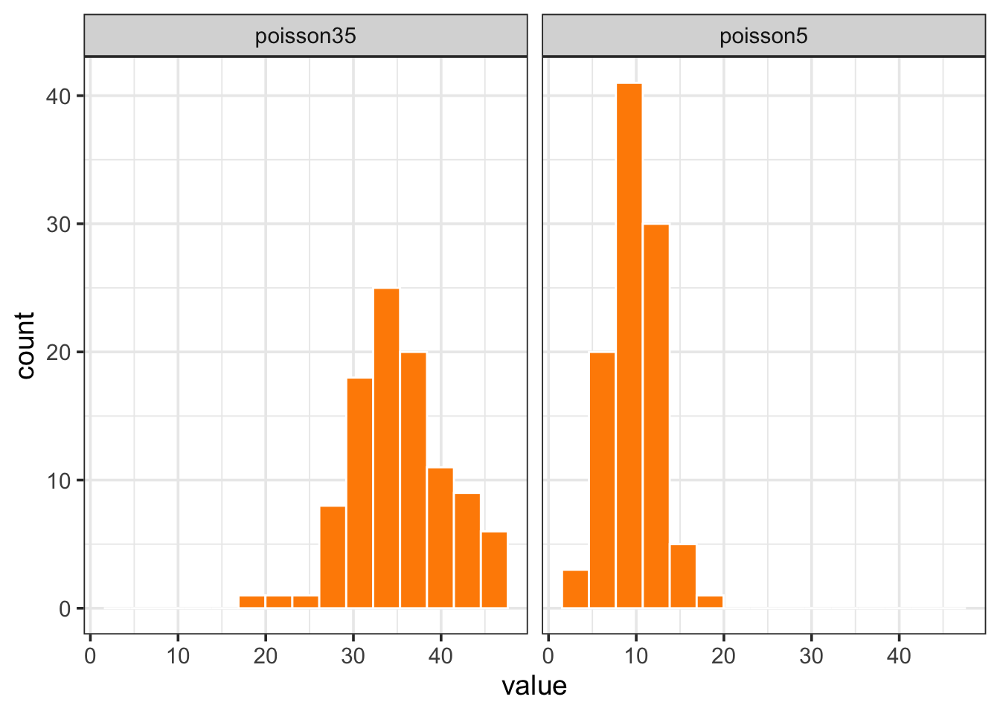
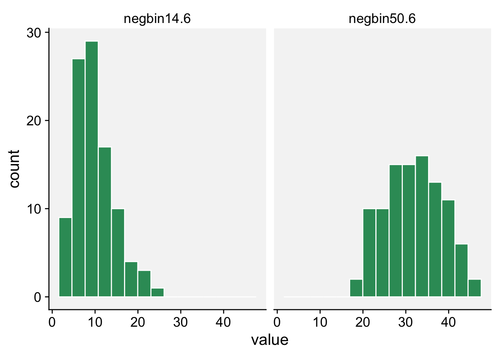
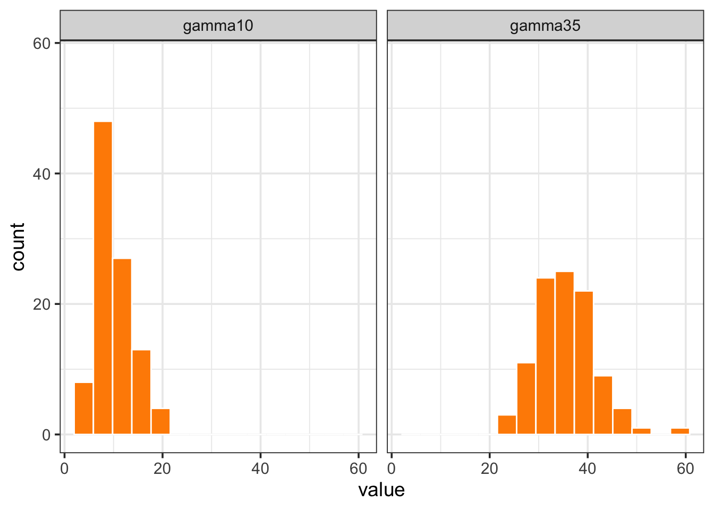
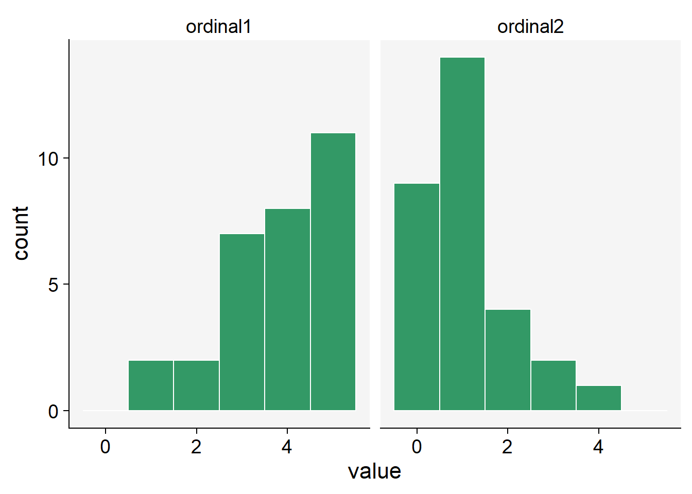

library(tidyverse)
library(r4pde)
set.seed(123) # for reproducibility
P.1 <- rbinom(100, size = 1, prob = 0.1)
P.3 <- rbinom(100, size = 1, prob = 0.3)
P.7 <- rbinom(100, size = 1, prob = 0.7)
P.9 <- rbinom(100, size = 1, prob = 0.9)
binomial_data <- data.frame(P.1, P.3, P.7, P.9)2 Disease variables
2.1 Disease quantification
Studies on the temporal progression or spatial spread of epidemics cannot be conducted without field-collected data, or, in some cases, simulated data. The study of plant disease quantification, termed Phytopathometry, is a subdivision of plant pathology concerned with the science of disease measurement. It has strong ties to the field of epidemiology (Bock et al. 2021).
Traditionally, disease quantification has been executed through visual evaluation. However, the past few decades have witnessed significant advancements in imaging and remote sensing technologies (which don’t necessitate contact with the object), leaving a profound impact on this field. As such, disease quantity can now be gauged through estimation (visually, by the human eye) or measurement (through remote sensing technologies such as RGB, MSI, and HSI) Figure 2.1.
While the utilization of digital or remote sensing technology for disease measurement or estimation provides a more objective approach, visual assessment is largely subjective. It is known to vary among human raters, as these raters differ in their innate abilities, training, and how they are influenced by the chosen method (e.g., scales). Disease is estimated or measured on a specimen within a population, or on a sample of specimens drawn from that population. The specimen in question can be a plant organ, an individual plant, a group of plants, a field, or a farm. The specific specimen type also determines the terminology used to describe disease quantity.

Finally, while developing new or refining existing disease assessment methods, it is crucial to evaluate the reliability of the assessments made by different raters or instruments, as well as their accuracy—specifically, how close the estimations or measurements are to the reference (or gold standard) values. Several methods are available for assessing the reliability, precision, and accuracy of these estimates or measurements (see definitions). The choice of methods depends on the objective of the work, but largely on the type or nature of the data. These considerations will be further discussed.
2.2 Disease variables
A common term used to reference the quantity of disease, irrespective of how it is expressed, is ‘disease intensity’. This term, however, has minimal practical value as it only implies that the disease is more or less “intense”. We require more specific terminology to standardize the reference to disease quantity and methodology. One of the primary tasks in disease assessment is classifying each specimen, often in a sample or within a population, as diseased or not diseased. This binary (yes/no or 1/0) evaluation may sufficiently express disease intensity if the goal is to ascertain the number or proportion of diseased specimens in a sample or a population.
This discussion brings us to two terms: disease incidence and prevalence. Incidence is typically used to denote the proportion or number (count) of plants (or their organs) deemed as observational units at the field scale or below. On the other hand, prevalence refers to the proportion or number of fields or farms with diseased plants within a larger production area or region (Nutter et al. 2006) Figure 2.2. Therefore, prevalence is analogous to incidence, with the only difference being the spatial scale of the sampling unit.

In many instances, it’s necessary to determine the degree to which a specimen is diseased, a concept defined as disease severity. In certain contexts, severity is narrowly defined as the proportion of the unit that exhibits symptoms (Nutter et al. 2006). However, a more expansive view of severity includes additional metrics such as nominal or ordinal scores, lesion count, and percent area affected (ratio scale). Ordinal scales are broken down into rank-ordered classes (see specific section), defined based on either a percentage scale or descriptions of symptoms (Bock et al. 2021). Occasionally, disease is expressed in terms of (average) lesion size or area, which could be regarded as a measure of severity. These variables represent different levels of measurements that provide varying degrees of information about the disease quantity - from low (nominal scale) to high (ratio scale) Figure 2.3.

2.3 Data types
The data used to express disease as incidence or any form of severity measurements can be discrete or continuous in nature.
Discrete variables are countable (involving integers) at a particular point in time. In other words, only a finite number of values (nominal or ordinal) is possible, and these cannot be subdivided. For instance, a plant or plant part can be either diseased or not diseased (nominal data). It’s not possible to count 1.5 diseased plants. Furthermore, a plant classified as diseased may exhibit a certain number of lesions (count data), or be categorized into a specific severity class (ordinal data, common in ordinal scales, e.g., 1-9). Disease data in the form of counts often relates to the number of infections per sampling units. Most commonly, these counts refer to the assessed pathogen population, such as the number of airborne or soilborne propagules.
In contrast to discrete variables, continuous variables can be measured on a scale and can assume any numeric value between two points. For example, the size of a lesion on a plant can be measured at a very precise scale (cm or mm). An estimate of severity on a percent scale (% diseased area) can take any value between non-zero and 100%. Although incidence at the individual level is discrete, at the sample level it can be treated as continuous, as it can assume any value in proportion or percentage.
Disease variables can also be characterized by a statistical distribution, which are models that provide the probability of a specific value (or a range of values) being drawn from a particular distribution. Understanding statistical or mathematical distributions is a crucial step in improving our grasp of data collection methods, experiment design, and data analysis processes such as data summarization or hypothesis testing.
2.4 Statistical distributions and simulation
2.4.1 Binomial distribution
For incidence (and prevalence), the data is binary at the individual level, as there are only two possible outcomes in a trial: the plant or plant part is disease or not diseased. The statistical distribution that best describe the incidence data at the individual level is the binomial distribution.
Let’s simulate the binomial outcomes for a range of probabilities in a sample of 100 units, using the rbinom() function in R. For a single trial (e.g., status of plants in a single plant row), the size argument is set to 1.
We can then visualize the plots.
binomial_data |>
pivot_longer(1:4, names_to = "P",
values_to = "value") |>
ggplot(aes(value)) +
geom_histogram(fill = "#339966",
bins = 10) +
facet_wrap( ~ P) +
theme_r4pde()

2.4.2 Beta distribution
In many studies, it’s often useful to express these quantities as a proportion of the total population or sample size, rather than absolute numbers. This helps standardize the data, making it easier to compare between different populations or different time periods.
For example, if we’re studying a plant disease, we could express disease incidence as the proportion of plants that are newly diseased during a given time period. Similarly, disease severity could be expressed as the proportion of each plant’s organ area that is affected by the disease. These proportions are ratio variables, as they can take on any value between 0 and 1, and ratios of these variables are meaningful.
The Beta distribution is a probability distribution that is defined between 0 and 1, which makes it ideal for modeling data that represents proportions. It’s a flexible distribution, as its shape can take many forms depending on the values of its two parameters, often denoted as alpha and beta.
Let’s simulate some data using the rbeta() function.
beta1.5 <- rbeta(n = 1000, shape1 = 1, shape2 = 5)
beta5.5 <- rbeta(n = 1000, shape1 = 5, shape2 = 5)
beta_data <- data.frame(beta1.5, beta5.5)Notice that there are two shape parameters in the beta distribution: shape1 and shape2 to be defined. This makes the distribution very flexible and with different potential shapes as we can see below.
beta_data |>
pivot_longer(1:2, names_to = "P",
values_to = "value") |>
ggplot(aes(value)) +
geom_histogram(fill = "#339966",
color = "white",
bins = 15) +
scale_x_continuous(limits = c(0, 1)) +
facet_wrap( ~ P)+
theme_r4pde()
2.4.3 Beta-binomial distribution
The Beta-Binomial distribution is a mixture of the Binomial distribution with the Beta distribution acting as a prior on the probability parameter of the binomial. Disease probabilities can vary across trials due to a number of unobserved or unmeasured factors. This variability can result in overdispersion, a phenomenon where the observed variance in the data is greater than what the binomial distribution expects.
This is where the Beta-Binomial distribution comes in handy. By combining the Beta distribution’s flexibility in modeling probabilities with the Binomial distribution’s discrete event modeling, it provides an extra layer of variability to account for overdispersion. The Beta-Binomial distribution treats the probability of success (disease occurrence in this context) as a random variable itself, following a Beta distribution. This means the probability can vary from trial to trial.
Therefore, when we observe data that shows more variance than the Beta distribution can account for, or when we believe there are underlying factors causing variability in the probability of disease occurrence, the Beta-Binomial distribution is a more appropriate model. It captures both the variability in success probability as well as the occurrence of the discrete event (disease incidence).
When combined with the Binomial distribution, which handles discrete events (e.g. whether an individual is diseased or not), the Beta-Binomial distribution allows us to make probabilistic predictions about these events. For example, based on prior data (the Beta distribution), we can estimate the likelihood of a particular individual being diseased (the Binomial distribution).
In R, the rBetaBin function of the FlexReg package generates random values from the beta-binomial distribution. The arguments of the function are n, or the number of values to generate; if length(n) > 1, the length is taken to be the number required. size is he total number of trials. mu is the mean parameter. It must lie in (0, 1). theta is the overdispersion parameter. It must lie in (0, 1). phi the precision parameter. It is an alternative way to specify the theta parameter. It must be a positive real value.
library(FlexReg)
betabin3.6 <- rBetaBin(n = 100, size = 40, mu = .3, theta = .6)
betabin7.3 <- rBetaBin(n = 100, size = 40, mu = .7, theta = .3)
betabin_data <- data.frame(betabin3.6, betabin7.3)betabin_data |>
pivot_longer(1:2, names_to = "P",
values_to = "value") |>
ggplot(aes(value)) +
geom_histogram(fill = "#339966",
color = "white",
bins = 15) +
facet_wrap( ~ P) +
theme_r4pde()
2.4.4 Poisson distribution
When conducting studies in epidemiology, specifically plant diseases, researchers often collect data on the number of diseased plants, infected plant parts, or individual symptoms, such as lesions. These variables are counted in whole numbers - 1, 2, 3, etc., making them discrete variables. Discrete variables contrast with continuous variables that can take any value within a defined range and can include fractions or decimals. In addition to being discrete, these variables are also non-negative, meaning they cannot take negative values. After all, you can’t have a negative number of diseased plants or lesions. Given these characteristics, a suitable distribution to model such data is the Poisson distribution. This distribution is particularly suitable for counting the number of times an event occurs in a given time or space.
In R, we can used the rpois() function to obtain 100 random observations following a Poisson distribution. For such, we need to inform the number of observation (n = 100) and lambda, the vector of means.
poisson5 <- rpois(100, lambda = 10)
poisson35 <- rpois(100, lambda = 35)
poisson_data <- data.frame(poisson5, poisson35)poisson_data |>
pivot_longer(1:2, names_to = "P",
values_to = "value") |>
ggplot(aes(value)) +
geom_histogram(fill = "#339966",
color = "white",
bins = 15) +
facet_wrap( ~ P) +
theme_r4pde()

2.4.5 Negative binomial distribution
While the Poisson distribution is indeed suitable for modeling count data, it assumes that the mean and variance of the data are equal. However, in real-world scenarios, especially in epidemiology, it is common to encounter overdispersed data - where the variance is greater than the mean. This could occur, for instance, if there’s greater variability in disease incidence across different plant populations than would be expected under the Poisson assumption.
In such cases, the Negative Binomial distribution is a better alternative. The Negative Binomial distribution is a discrete probability distribution that models the number of successes in a sequence of independent and identically distributed Bernoulli trials before a specified (non-random) number of failures occurs.
One of the key features of the Negative Binomial distribution is its ability to handle overdispersion. Unlike the Poisson distribution, which has one parameter (lambda, representing the mean and variance), the Negative Binomial distribution has two parameters. One parameter is the mean, but the other (often denoted as ‘size’ or ‘shape’) governs the variance independently, allowing it to be larger than the mean if necessary. Thus, it provides greater flexibility than the Poisson distribution for modeling count data and can lead to more accurate results when overdispersion is present.
In R, we can use the rnbinom() function to generate random variates from a Negative Binomial distribution. This function requires the number of observations (n), the target for the number of successful trials (size), and the probability of each success (prob).
Here’s an example:
# Generate 100 random variables from a Negative Binomial distribution
negbin14.6 <- rnbinom(n = 100, size = 14, prob = 0.6)
negbin50.6 <- rnbinom(n = 100, size = 50, prob = 0.6)
negbin_data <- data.frame(negbin14.6, negbin50.6)negbin_data |>
pivot_longer(1:2, names_to = "P",
values_to = "value") |>
ggplot(aes(value)) +
geom_histogram(fill = "#339966",
color = "white", bins = 15) +
facet_wrap( ~ P) +
theme_r4pde()

2.4.6 Gamma distribution
In plant disease epidemiology and other fields of study, we may often encounter continuous variables - these are variables that can take on any value within a given range, including both whole numbers and fractions. An example of a continuous variable in this context is lesion size, which can theoretically be any non-negative value.
Often, researchers use the normal (Gaussian) distribution to model such continuous variables. The normal distribution is symmetric, bell-shaped, and is fully described by its mean and standard deviation. However, a fundamental characteristic of the normal distribution is that it extends from negative infinity to positive infinity. While this is not a problem for many applications, it becomes an issue when the variable being modeled cannot take on negative values - like the size of a lesion.
This is where the Gamma distribution can be a good alternative. The Gamma distribution is a two-parameter family of continuous probability distributions, which does not include negative values, making it an appropriate choice for modeling variables like lesion sizes. While it might seem a bit more complicated due to its two parameters, this also allows it a greater flexibility in terms of the variety of shapes and behaviors it can describe. The Gamma distribution is often used in various scientific disciplines, including queuing models, climatology, financial services, and of course, epidemiology. Its main parameters are the shape and scale (or alternatively shape and rate), which control the shape, spread and location of the distribution.
We can use the rgamma() function that requires the number of samples (n = 100 in our case) and the shape, or the mean value.
gamma10 <- rgamma(n = 100, shape = 10, scale = 1)
gamma35 <- rgamma(n = 100, shape = 35, scale = 1)
gamma_data <- data.frame(gamma10, gamma35)gamma_data |>
pivot_longer(1:2, names_to = "P",
values_to = "value") |>
ggplot(aes(value)) +
geom_histogram(fill = "#339966",
color = "white",
bins = 15) +
ylim(0, max(gamma_data$gamma35)) +
facet_wrap( ~ P) +
theme_r4pde()

2.4.7 Simulating ordinal data
Ordinal data is a statistical data type consisting of numerical scores that fall into a set of categories which are ordered in a meaningful way. This can include survey responses (e.g., strongly disagree to strongly agree), levels of achievement (e.g., poor, average, good, excellent), or, in the case of plant disease, disease severity scales (e.g., 0 to 5, where 0 represents a healthy plant and 5 represents a plant with severe symptoms).
When working with ordinal data, we often need to make assumptions about the distribution of the data. However, unlike continuous data which might be modeled by a normal or Gamma distribution, or count data which might be modeled by a Poisson distribution, ordinal data is discrete and has a clear order but the distances between the categories are not necessarily equal or known. This makes the modeling process slightly different.
We can use the sample() function and define the probability associated with each rank. Let’s generate 30 units with a distinct ordinal score. In the first situation, the higher probabilities (0.5) are for scores 4 and 5 and lower (0.1) for scores 0 and 1, and in the second situation is the converse.
ordinal1 <- sample(0:5, 30, replace = TRUE, prob = c(0.1, 0.1, 0.2, 0.2, 0.5, 0.5))
ordinal2 <- sample(0:5, 30, replace = TRUE, prob = c(0.5, 0.5, 0.2, 0.2, 0.1, 0.1))
ordinal_data <- data.frame(ordinal1, ordinal2)ordinal_data |>
pivot_longer(1:2, names_to = "P",
values_to = "value") |>
ggplot(aes(value)) +
geom_histogram(fill = "#339966",
color = "white",
bins = 6) +
facet_wrap( ~ P) +
theme_r4pde()
